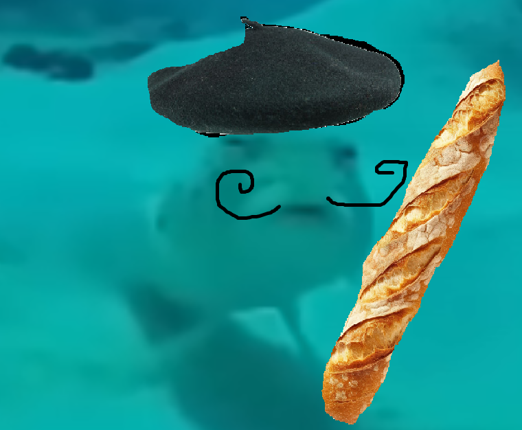

Taylor Swift ha emitido durante tres meses hasta 138 toneladas de CO2. Una cifra que equivale a lo que contamina un español medio en unos 25 años. Sin embargo, Swift no ha estado de acuerdo con que se compartan estos "datos privados" que pueden ponerla en supuesto "peligro". De esta forma, ha amenazado a uno de sus fans por ponerla en el ojo del huracán y a la cabeza de la lista de artistas que más contaminan en este momento con sus traslados en jet privado. Sin embargo, la realidad que esconde la artista son estos datos que ha intentado ocultar.
En el océano pacífico se ha encontrado un ejemplar de pez que se transforma, ¡como si fuera un Gormiti! se ha convertido en un pez Baguette. Los científicos están investigando el motivo por el cual el pez se ha podido transformar, y han culpado a Taylor Swift por contaminar demasiado, y ha alterado a la forma de los peces. Ahora mismo el pez se identifica como un pez francés y su sueño es ir nadando hasta Francia. ¡Buena suerte pececito!
